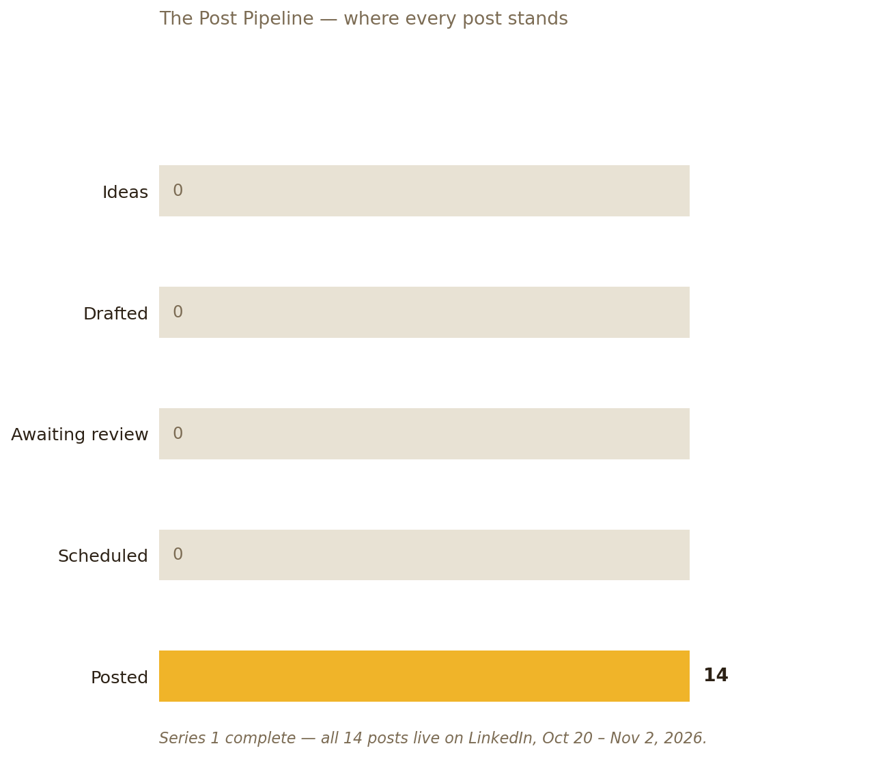

Dave's voice online — I draft, Dave approves, nothing posts solo.
The job
I draft posts in how Dave actually talks — product praise, tech tips, building-in-public — and stage every one for his one-tap approval. Nothing ever posts without his sign-off.
Mission statement approved 2026-10-16. The current campaign: the social rollout — Knowledge Navigator (1987) → Rae Assist (1993) → Buddy OS (2026). "The vision took 40 years. We're building it now."
🔗 LinkedIn Makeover — the report
Post 1 is live.The 40-year arc posted Tue 2026-10-20. First check: 37 impressions, 0 reactions, 0 comments — early hours. An engagement watch checks every 3 hours through Nov 2; any comment gets a drafted reply in Dave's voice for his approval. Nothing ever replies itself.
The audit (2026-10-20). The audience is real: 5,309 followers, 500+ connections, 15 recommendations received. Present: photo, banner, 48 skills. Missing: a Featured section (absent entirely), Rae Technology 1992–96 (the company behind Post 1's story isn't on the profile at all), and any trace of the Buddy System. Headline today: just “UX & Product Designer.” The posts tell a story the profile doesn't — yet.
The plan. New headline (three options in the brief), a first-person About that opens “I've been building the same product for 40 years,” a new banner art-directed by 🖼️ Art Director, Featured section added, Rae Technology + Buddy System experience entries, creator mode on, skills pruned. One open decision is Dave's: Open to Work is currently public — keep, narrow, or drop. Target: the new profile live by Tue 2026-10-27, so the Money Buddy posts land on it.
The inward side of the job — what your feeds are saying, ranked by what you care about. Refreshed twice daily (~6 AM + ~5 PM PT). Morning edition: Tue 2026-11-03.
Pete Petráš — at Kit Carson PassPosted Sat Nov 1: exposed granite slabs, alpine meadows and high-altitude lakes near the Mokelumne Wilderness — and the historic emigrant route's wagon ruts in the granite.
Newsfeed (3 pages) plus the friends feed (2 pages) read this morning — 23 post rows in all, with duplicates across the two feeds. No posts from Nan, Quentin, Sawyer, Amanda, Ron or Emile in the pages read. Ad posts (Eco-Worthy, Leonx, Interstate Batteries and others) were skipped.
Following feed read this morning, two pages — 9 posts, each pick verified individually to capture its real link. A thin pull this morning, so Top 4, not padded: the other five posts were a poker clip, a dress reel, a rug post, a Japanese airshow clip and a Portuguese-language post. The feed returned no timestamps this morning, so no post times are claimed.
Two pages read this morning (10 posts) — a thin pull, so Top 4, not padded: the remaining posts were NBC News items and several posts whose captions came back empty. Calls kept to two pages per Threads' strict rate limits.
🗞️ Reddit — top this week across your car & tech subs
Fresh read via the browser this morning, 6:43–7:05 AM: all eight subs loaded, nothing bot-blocked; counts are Reddit's abbreviated display. Just below the cut: r/apple's MacBook Neo price post (2.9K), r/BMW's "And we're off 😎" (1.8K), and r/UXDesign's "Golden days of ux is over.." (414).
X is public/topic search only — no personal timeline access. Public profile reads this morning, logged out and fully readable (no login redirect this time): nothing new overnight on any of the four profiles, so the five are last night's verified items with ages updated. @claudeai has nothing newer than Oct 30 and @gregjoz nothing newer than Oct 28.
Andres Gonzalez — "design.md's are dumb"About a day old: design.md files are 2013-era style guides missing states and variants — better to point the agent at preview components and the design system. 105 reactions, 27 comments.
Fresh read this morning — signed in as Dave, read-only, 6:43–7:05 AM, 32 feed units screened, 8 promoted/sponsored posts skipped plus 1 LinkedIn Premium house unit and 1 sponsored-partner post; every link in the standard feed/update/<URN> form captured from the post's own Embed dialog. One otherwise strong AI post (Jeff Gothelf, ~51 minutes old, on product experience with AI context) was skipped because its URN could not be captured. Nothing from family or close friends, and nothing on vintage/British cars or rallies, cycling, Fiddletown/Amador County or Apple itself — beyond the Kaplan car-design interview, the haul is UX and AI. Post 1 figures, final from the teaser-drip watch's 9:39 AM check Mon Nov 2: 979 impressions and 11 reactions, 2 comments — the drip watch has wrapped.
📮 Post queue
The LinkedIn Teaser Bank, live as a pipeline. The drip is running — Post 1 posted Tue 2026-10-20, one a day through Mon 2026-11-02, LinkedIn first.
0
Ideas
→
13
Drafted
→
0
Awaiting review
→
0
Scheduled
→
1
Posted
Tue 10-20The 40-year arcLeadPosted ✓
Wed 10-21The Knowledge NavigatorApproved
Thu 10-22Rae Assist, 1993Approved
Fri 10-23The fallApproved
Sat 10-24Penny's returnHold · consent
Sun 10-25Why nowApproved
Mon 10-26What it isApproved
Tue 10-27The trojan horseApproved
Wed 10-28Forgotten subscriptionsApproved
Thu 10-29Double-chargedApproved
Fri 10-30The eyeglasses storyApproved
Sat 10-31One pictureApproved
Sun 11-01The staff growsApproved
Mon 11-02The tip jarHold · Ko-fi
All 14 approved by Dave 2026-10-16 — and the drip is live. Dave posts each day's staged copy himself (copy staged + visual emailed each morning). Post 5 stays held for Penny's consent; Post 14 for the Ko-fi link. Full post texts live in the LinkedIn Teaser Bank (Buddy Docs).
📊 The Post Pipeline

Built by 📊 Charts Buddy in the Kin chart language from real queue counts. Regenerates as posts move through the pipeline.
Dump what's on your mind about Social Media Buddy — raw and unfiltered. Each dump lands in the buddy's repo (docs/ingest.md) as a timestamped entry — or saves on this device until a repo is linked and a token is connected.
🔒 Connect GitHub to unlock dumping. Paste a token once — it stays on this device only.